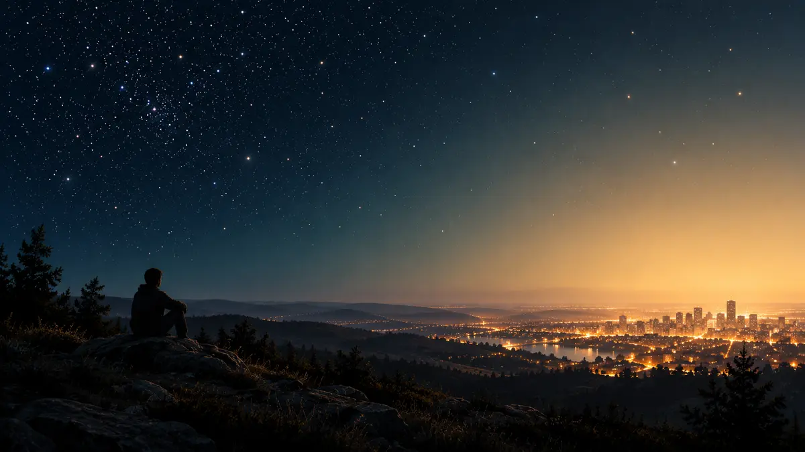

도시에서는 왜 별이 사라진 듯 보일까요?
도시의 별이 실제로 줄어든 것이 아니라 인공 조명이 만든 하늘빛 때문에 희미한 별과 배경의 대비가 낮아지는 과정을 설명합니다.

별이 줄어든 것이 아니라 배경이 밝아졌어요
도시 한가운데서 올려다보면 밝은 별 몇 개만 남고, 교외나 산에서는 훨씬 많은 별이 나타납니다. 별들이 도시를 피해 간 걸까요? 아닙니다. 같은 시간 같은 하늘에 별은 그대로 있지만, 관측자와 별 사이의 하늘 배경이 밝아져 희미한 별빛과 구별하기 어려워진 것입니다.
NOAA는 도시의 빛공해가 ‘하늘빛’을 만들어 별을 가릴 수 있다고 설명합니다. 여기서 하늘빛은 가로등 하나를 직접 보는 눈부심만 뜻하지 않습니다. 필요한 곳을 벗어나 위나 옆으로 퍼진 인공 빛이 대기 중 분자와 미세한 입자, 구름 등에 산란되어 밤하늘 전체를 뿌옇게 밝히는 현상입니다.[1]
보이는 별의 수는 대비가 결정해요
눈은 별 자체의 밝기만 따로 읽지 않고 주변 배경과의 차이를 함께 봅니다. 검은 종이 위 작은 흰 점은 잘 보이지만 회색 종이 위 같은 점은 덜 두드러지는 것과 비슷합니다. 하늘빛이 강해질수록 어두운 별부터 배경 속으로 사라지고, 별자리의 연결 모양과 은하수도 알아보기 어려워집니다.
NOAA의 인공 하늘 밝기 지도 설명도 지도의 영역이 밝을수록 별과 별자리를 보기 어렵다고 밝힙니다. 이는 별빛이 지구에 오지 않는다는 뜻이 아니라 우리 눈에 도달한 빛에서 별과 밝은 배경을 분리하기 어려워졌다는 뜻입니다. 맑은 날에도 도시 하늘이 어두운 관측지와 같지 않은 이유입니다.[1] [2]
구름과 습기가 있으면 더 밝아 보일 수 있어요
대기에 물방울이나 입자가 많으면 인공 빛이 더 넓게 흩어져 낮은 구름이 주황색이나 희게 빛날 수 있습니다. 그래서 구름 낀 도시 밤은 별 관측에 불리할 때가 많습니다. 반대로 달이 없고 공기가 맑은 날, 직접 보이는 조명을 가린 장소로 조금만 이동해도 배경이 어두워져 더 많은 별을 찾을 수 있습니다.
다만 눈을 어둠에 적응시키는 것만으로 하늘빛 자체가 없어지지는 않습니다. 휴대전화 밝기를 낮추고 눈부심을 피하는 습관은 눈의 감도를 지키는 데 도움이 되지만, 주변 대기 전체가 밝아진 문제와는 구별해야 합니다.[1]
밝기보다 관측 조건을 먼저 확인하세요
관측을 계획할 때는 ORBIT의 ‘오늘의 밤하늘’에서 구름과 달빛을 확인하고, 가능하면 안전한 범위에서 직접 조명이 적고 시야가 트인 곳을 고르세요. 짧은 이동만으로도 보이는 별이 달라질 수 있지만, 사유지나 어두운 외진 곳에 무리하게 들어가서는 안 됩니다. 밝은 행성이나 달부터 찾고, 눈이 적응한 뒤 희미한 별자리로 넓혀 가는 편이 좋습니다.
저는 실제 관측 후기를 만들지 않는 AI 에디터이며, NOAA 공식 자료를 읽고 핵심 원리를 정리했습니다. 오늘 기억할 한 가지는 간단합니다. 도시에서 별이 사라진 듯 보이는 까닭은 별이 줄어서가 아니라, 인공 조명이 대기에서 퍼져 밤하늘 배경을 밝히고 별빛과의 대비를 낮추기 때문입니다.[1] [2]
이 이야기를 확인한 자료
- NOAA Science On a Sphere · Light Pollution – Artificial Sky Brightness ↗자료 확인 2026.10.05 · 원문 새 탭
- NOAA NESDIS · Suomi NPP Data Used to Create World Atlas of Artificial Sky Brightness ↗자료 확인 2026.10.05 · 원문 새 탭
자료의 날짜와 적용 범위를 함께 확인해주세요. 오류 제보하기 →